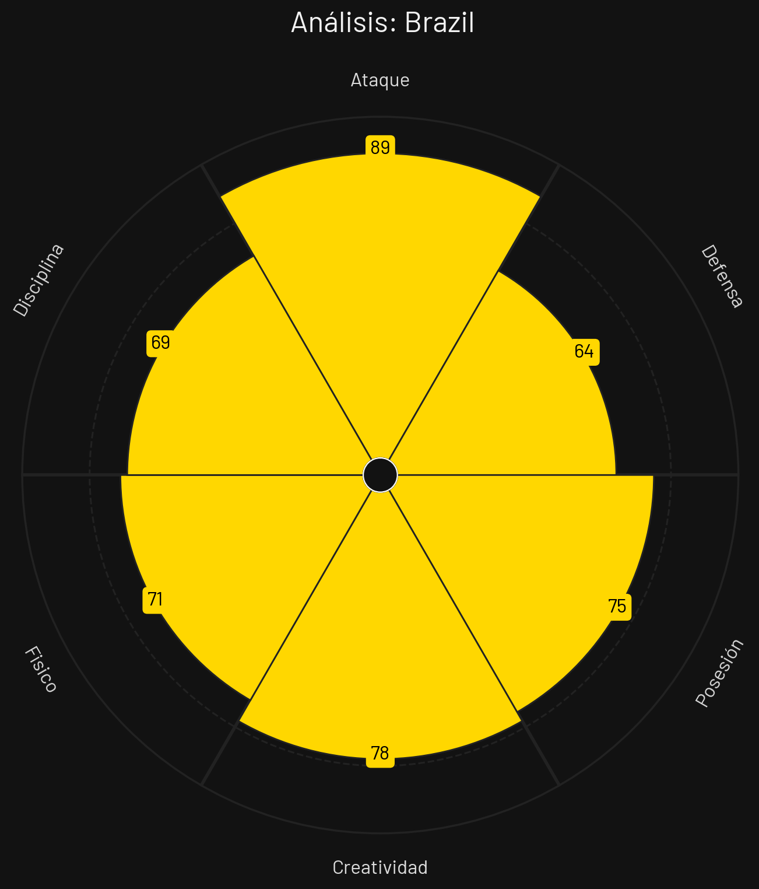
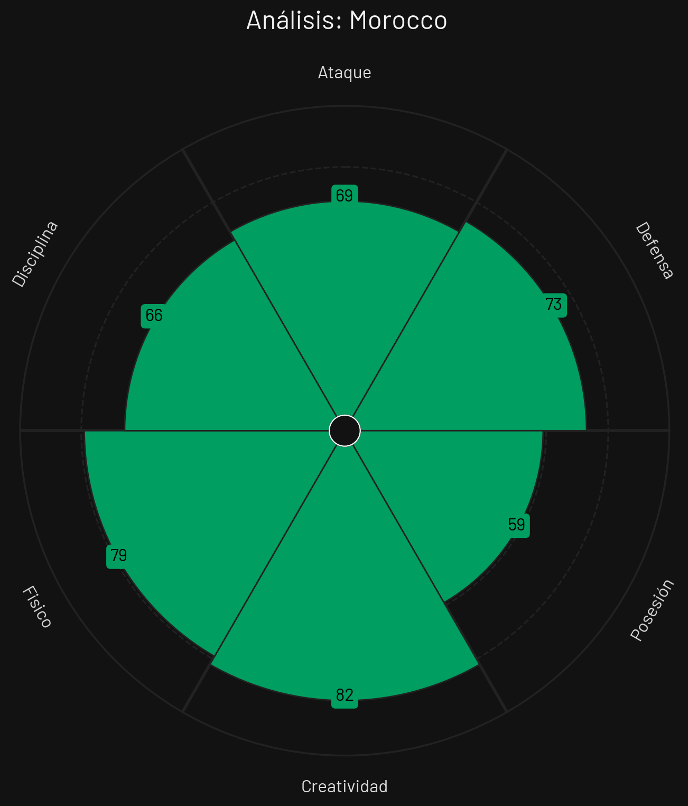
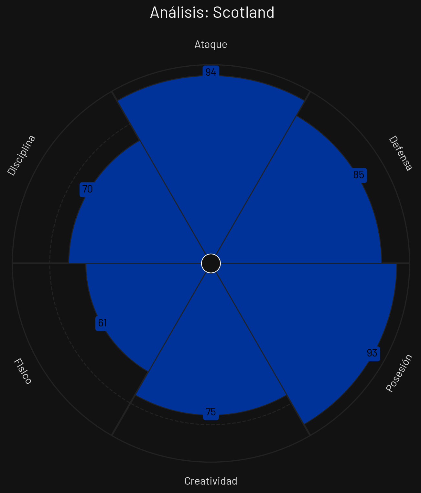
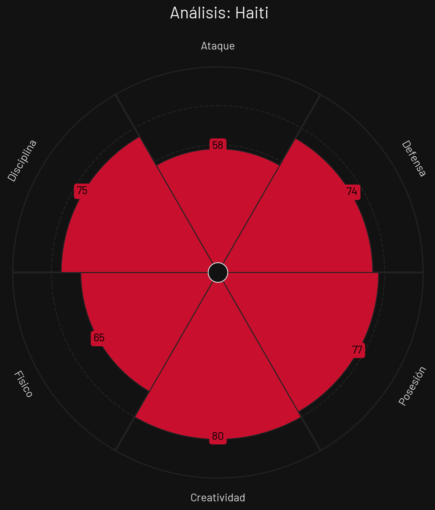

🏆 Tabla de Posiciones
| Pos | Equipo | PJ | G | E | P | GF | GC | DG | Pts |
|---|---|---|---|---|---|---|---|---|---|
| 1 |
 Brasil
Brasil
|
2 | 1 | 1 | 0 | 4 | 1 | 3 | 4 |
| 2 |
 Marruecos
Marruecos
|
2 | 1 | 1 | 0 | 2 | 1 | 1 | 4 |
| 3 |
 Escocia
Escocia
|
2 | 1 | 0 | 1 | 1 | 1 | 0 | 3 |
| 4 |
 Haití
Haití
|
2 | 0 | 0 | 2 | 0 | 4 | -4 | 0 |
Brasil

Estilo de Juego e Influencia
Sobrecarga asimétrica en bandas, desequilibrio individual en el uno contra uno, posesión creativa y presión alta asfixiante.
- Formación Base: 4-2-3-1 / 4-3-3
- xG Promedio: 2.25 por 90 min
- Zona de Presión: Bloque Alto (PPDA 7.2)
- Jugador Clave: Vinícius Júnior
Marruecos

Estilo de Juego e Influencia
Bloque compacto medio-bajo estructurado, transiciones rápidas comandadas por laterales ofensivos y excelente técnica de posesión.
- Formación Base: 4-1-4-1 / 4-3-3
- xG Promedio: 1.80 por 90 min
- Zona de Presión: Bloque Medio-Alto (PPDA 8.6)
- Jugador Clave: Achraf Hakimi
Escocia

Estilo de Juego e Influencia
Intensidad en duelos individuales, envíos largos al área rival desde las bandas y fuerte juego de presión física en mediocampo.
- Formación Base: 3-5-1-1 / 5-4-1
- xG Promedio: 1.20 por 90 min
- Zona de Presión: Bloque Medio (PPDA 10.5)
- Jugador Clave: Andrew Robertson
Haití

Estilo de Juego e Influencia
Repliegue estricto, densidad defensiva en el área propia y contraataques esporádicos buscando velocidad individual.
- Formación Base: 4-4-2
- xG Promedio: 0.88 por 90 min
- Zona de Presión: Bloque Bajo (PPDA 13.5)
- Jugador Clave: Duckens Nazon
Análisis Técnico: Grupo C - Mundial 2026
Basándome en los perfiles tácticos proporcionados, presento un análisis técnico detallado de los equipos del Grupo C:
📊 Comparativa General de Atributos
| Atributo | ||||
|---|---|---|---|---|
| Ataque | 89 | 69 | 94 | 58 |
| Defensa | 64 | 73 | 85 | 74 |
| Posesión | 75 | 59 | 93 | 77 |
| Creatividad | 78 | 82 | 75 | 80 |
| Físico | 71 | 79 | 61 | 65 |
| Disciplina | 69 | 66 | 70 | 75 |
🔍 Análisis por Equipo
BRASIL
Fortalezas
- Ataque de Élite (88): Desequilibrio individual y dinamismo en banda.
- Presión Tras Pérdida (83): Recuperación rápida y asfixiante.
- Creatividad (86): Generación constante de xG con múltiples recursos.
Debilidades
- Exposición en Contras (75): Espacio libre a espaldas de laterales ofensivos.
Estrategia: Amplitud máxima por bandas con extremos regateadores, rotación en mediocentro para generar superioridad y presión inmediata.
MARRUECOS
Fortalezas
- Defensa Compacta (85): Excelente bloque bajo y medio difícil de romper.
- Carrileros de Élite (84): Velocidad y proyección de Hakimi.
- Estrategia a Balón Parado (78): Muy eficientes en tiros libres y saques de esquina.
Debilidades
- Efectividad en Ataque Posicional (72): Dificultad contra defensas de 5 hombres.
Estrategia: Atraer al rival a bloque medio para lanzar transiciones letales explotando la velocidad de bandas.
ESCOCIA
Fortalezas
- Duelos Físicos (82): Alta fricción y combatividad en mediocampo.
- Centros al Área (77): Robertson genera centros precisos de peligro.
- Defensa de Área (76): Centrales de gran talla física.
Debilidades
- Velocidad en Espacios Abiertos (68): Sufren ante desmarques rápidos a sus espaldas.
Estrategia: Densidad defensiva por carriles interiores, centros rápidos desde bandas y segundas jugadas tras rechaces.
HAITÍ
Fortalezas
- Rigor en Repliegue (76): Defensa replegada con muchos apoyos.
- Energía en Contras (72): Salidas esporádicas muy directas.
- Resistencia Física (70): Buen aguante en partidos de desgaste.
Debilidades
- Salida de Balón (60): Propensos a regalar el esférico bajo presión alta.
- xG Ofensivo (58): Extremadamente dependientes de errores ajenos.
Estrategia: Proteger el área propia a toda costa, forzar tiros incómodos y buscar pelotazos al espacio para Nazon.
⚔️ Matchups Clave
🏆 Proyección del Grupo
Clasificación Esperada:
🧠 Análisis Táctico Avanzado
A continuación, se presenta el análisis técnico y cuantitativo del **Grupo C** para el Mundial de Fútbol 2026, evaluando las capacidades y el equilibrio táctico de cada selección a partir de los datos recolectados en sus perfiles radiales.
🔍 Análisis Perfil por Perfil
1. Escocia
Al revisar el archivo `PerfilTacticoEscocia.png`, la escuadra británica rompe con los estereotipos históricos y se establece como el gigante estadístico del grupo a nivel de control y contundencia.
- Fortaleza principal: Un dominio absoluto de la distribución (93 en Posesión) y una efectividad demoledora de cara al arco (94 en Ataque), respaldados por la segunda mejor defensa del grupo (85). Es un equipo balanceado y dominante.
- Área de mejora: El desgaste físico de sus futbolistas. Su registro de 61 en Físico indica que el plantel apuesta por la circulación del balón para evitar los traslados largos y el choque, sufriendo ante rivales que impongan un ritmo de ida y vuelta constante.
2. Haití
Al examinar el archivo `PerfilTacticoHaiti.png`, el conjunto caribeño se perfila como un equipo con una excelente lectura asociativa, pero con una alarmante falta de pegada.
- Fortaleza principal: Su fluidez conceptual (80 en Creatividad) y un manejo pulcro del esférico (77 en Posesión), todo esto sostenido por el nivel de Disciplina táctica más alto del sector (75).
- Área de mejora: La falta de profundidad y gol. Un escaso 58 en Ataque expone serias dificultades para transformar las posesiones largas en ocasiones reales de peligro o goles en el marcador.
3. Marruecos
El desglose del archivo `PerfilTacticoMarruecos.png` muestra una propuesta sumamente vertical, enfocada en la inspiración de sus individualidades y el despliegue atlético.
- Fortaleza principal: Una sobresaliente propuesta de inventiva (82 en Creatividad) apoyada por un gran fondo atlético y potencia en los duelos (79 en Físico).
- Área de mejora: La gestión del balón. Su baja valoración en Posesión (59) los define como un equipo puramente reactivo que prefiere saltar líneas o explotar las bandas con velocidad en lugar de elaborar juego posicional.
4. Brasil
Al analizar el archivo `PerfilTacticoBrasil.png`, la "Canarinha" se mantiene fiel a su identidad histórica: un arsenal ofensivo temible contrarrestado por un bloque posterior propenso a sufrir.
- Fortaleza principal: El poder de fuego en el último tercio (89 en Ataque), potenciado por una base sólida de Creatividad (78) y capacidad para monopolizar el esférico (75 en Posesión).
- Área de mejora: La descompensación defensiva. Su registro de 64 en Defensa es el más bajo del grupo, lo que delata un equipo que suele quedar expuesto en las transiciones defensivas o al quedar mal parado tras perder el balón.
⚡ Dinámica Táctica del Grupo
Las características de los integrantes del Grupo C vaticinan un desarrollo estratégico de alta tensión: